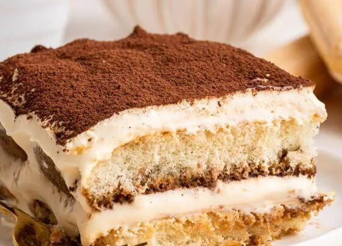

200g ladyfinger biscuits
1 cup strong coffee
250g mascarpone cheese
1 cup cream
½ cup sugar
2 tbsp cocoa powder
Whip cream and sugar until soft peaks form.
Fold in mascarpone.
Dip biscuits in coffee.
Layer biscuits and cream mixture.
Repeat layers and dust cocoa.
Chill for 4 hours